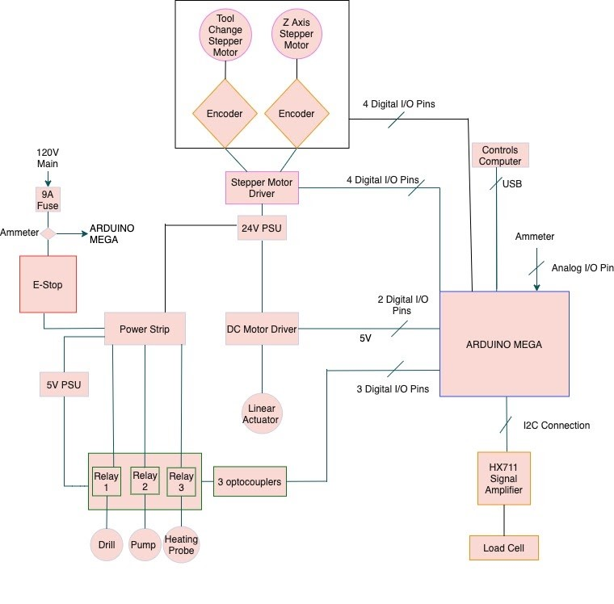
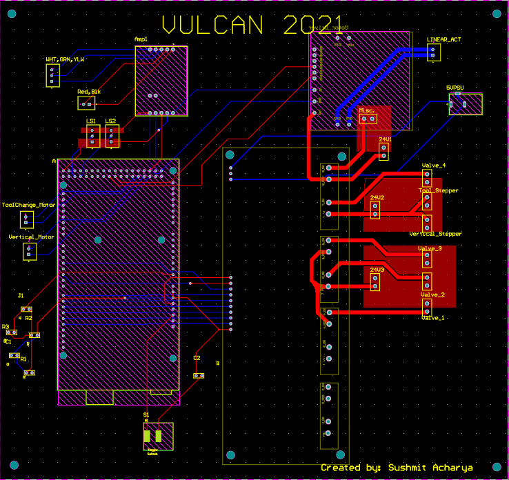
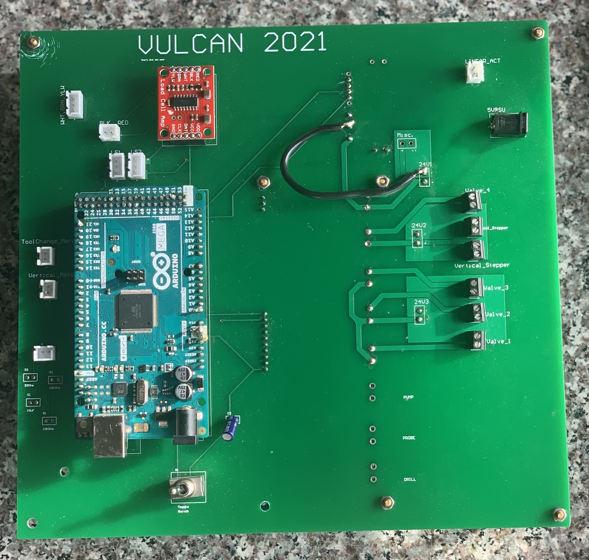
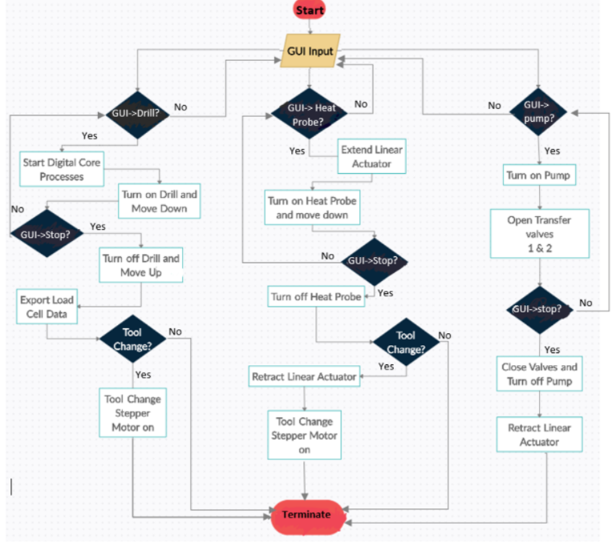
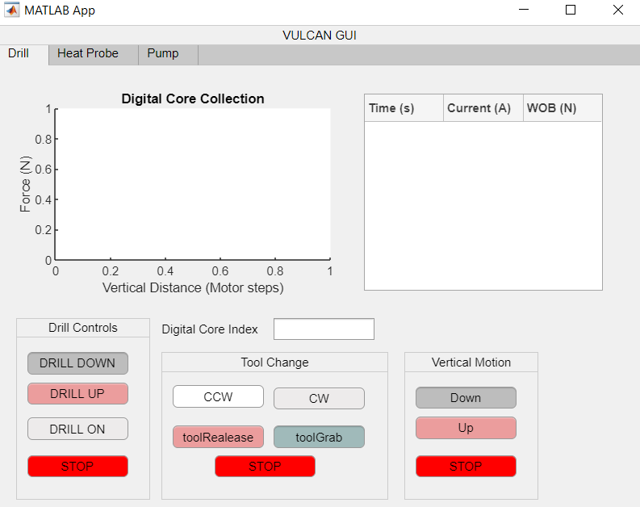

Project Details
Overview
The primary objective for this competition was to create a drill system that would drill through simulated martian regolith and extract out ice as filtered water. Additionally, a digital core that summarizes the relative thickness of the layers of regolith for better understanding of the martian surface was required.
Vulcan's approach was to drill through the layers and sublimate the ice in order to extract vapor which then would be condensed into liquid. This approach seemed the most feasible due to the phase diagram characteristics on mars. This also meant a lot of constraints and requirements for power delivery and management which I personally was responsible for.
Electronics Hardware
This is the high-level global wiring diagram used for the VULCAN Electronic system



This PCB was made primarily to reduce wiring complexity and allow for quick debugging. In addition to that, it allowed for using only one 24V Power Supply instead of 3 through some power branching analysis. This was crucial in achieving our lightest Mass Award as it removed ~4
pounds from the system.
The PCB houses:
1 Arduino Mega module that was used as the primary micro controller for the system
1 Relay Module that was used for switching control for the following components:
Drill,
Pump,
4 Valves,
Motor Driver
1 Motor Driver used for a linear actuator
1 HX711 signal amplifier used for amplifying the load cell signal
A voltage divider and low-pass filter to accodomate the ammeter signal
Female JSTs and screw terminals for component and power wiring
Capacitive switching circuit for disabling Arduino Auto-Reset
Factors for component/system placement decisions:
Signal Integrity
-
High Voltage components placed towards the right of the PCB while high speed data lines and signals placed towards the left
-
Arduino inputs and outputs placed in the left as the relays being the isolation factor for the outputted power on the right
-
Ground Planes for quick return paths for power traces located in the right of the PCB.
-
Twisted/ "pigtailed" wires for further magentic field loop reduction
Space Utilisation
-
Additional space left for possible future amendments
Possible Improvements:
-
4 layer board instead of 2 for power and ground plane inclusion
-
Compact PCB for better usage of extra PCB real estate through complete consideration of needed circuits/ components
Embedded Software and GUI
Embedded Arduino Software:

This is the High-Level SW flowchart. It was implemented into Arduino C code through a FSM representation. Each state would be an action the system executes with commands from the GUI being the state change triggers.
Check out the code in my github page!

This is the GUI generated from Matlab App Designer. Each button represents a callback function that triggers state change in the primary embedded software.
Check out the code in my github page!